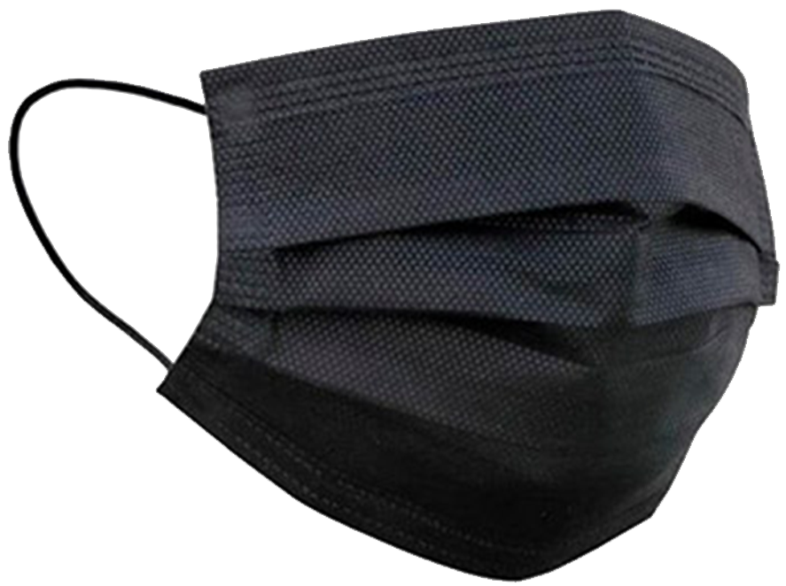
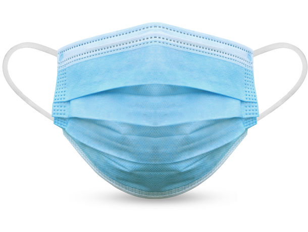
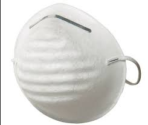
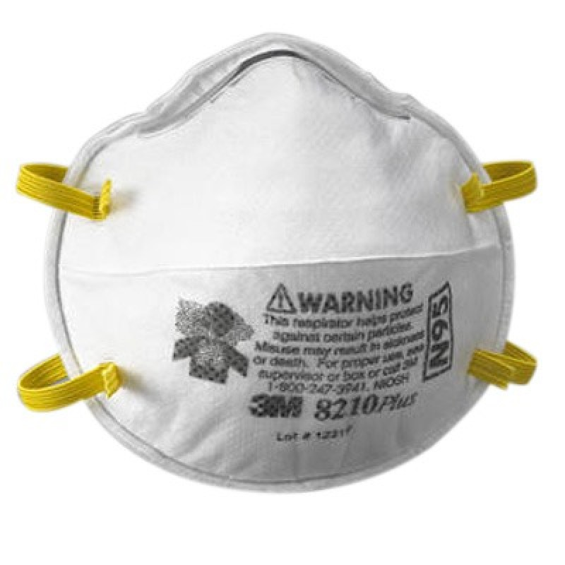
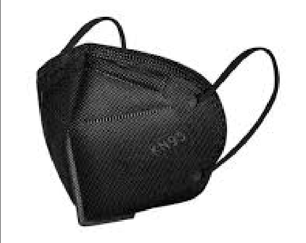

Cuando se usa una mascarilla quirúrgica o de higiene, el objetivo es evitar la transmisión hacia el paciente, de agentes infecciosos, provenientes del personal de salud que lo usa. También tienen la finalidad de evitar el contacto con las salpicaduras de fluidos y sangre potencialmente patógenos. Están diseñados para evitar la diseminación de microorganismos que se alojan en boca, nariz y garganta, por lo cual se evita la contaminación a las heridas del paciente, funcionan de dentro hacia fuera, la razón por la que cumplen su función, es porque, durante la exhalación, el aire de la nariz y la boca sale con cierta velocidad y se dirige frontalmente. Las partículas son relativamente gruesas, entre 3 y 8 micras, (1 micra = 0,001 mm), e impactan directamente en la parte interior de la mascarilla.
1. Lávate las manos con agua y jabón antes de manipular el cubrebocas.
2. Revisa que se encuentre en un estado óptimo para ser utilizado.
3. Asegúrate que el cubrebocas se encuentre del lado correcto, es decir, que la parte que va hacia la cara sea la adecuada.
4. Sujétalo alrededor de las orejas.
5. Cubre completamente tu rostro desde el puente de la nariz hasta debajo del mentón. No dejes ningún espacio o hueco.
6. No toques el cubrebocas mientras lo usas. Si lo haces, lávate las manos, usa gel o solución de alcohol.
7. Reemplaza el cubrebocas en caso de que se humedezca.
8. Para quitártelo, hazlo de atrás hacia delante, desatándolo con las manos limpias.
9. Luego de usarlo, lávalo inmediatamente a mano o en lavadora si es de tela; o si es desechable, deposítalo en una bolsa de plástico, ciérrala y tírala en la basura.
Imaginemos que es 1890 y una pareja toma café. Él se llama Karl Wilhem Flügge, es higienista alemán y cuenta su más reciente descubrimiento “¿sabías que cuando tosemos, estornudamos o hablamos esparcimos gotitas de saliva por el aire?”
“¿Ah sí?”, responde ella con media mordida de sándwich en la boca y por ende escupe sobre la mesa, sobre el café y sobre Wilhem Flügge, “no sabía”, agrega y le da un sorbo a su café.
La historia es inventada, pero las cosas ciertas del asunto las dijo el Dr. Guillermo Murillo-Godínez en su breve artículo Las gotitas de Flügge:
1) Las gotas alcanzan una distancia de un metro, aun si se habla en voz baja. 2) Se quedan en el aire durante media hora y después se establecen en superficies. 3) Miden hasta diez micras. O sea, diez millonésimas partes de un metro, (Brian Ley demostró en 1999 con su estudio Diameter of a Human Hair que un cabello humano, por más delgado que sea, no es menor a 17 micras). 4) Son portadoras de bacterias y virus.
Por este último punto fue que en 1897 se abogó por el uso de cubrebocas en cirugía y así proteger a la gente de morir por infecciones tras operarse.
Aunque su uso se ha popularizado en los últimos dos años, sus beneficios tienen varios siglos de antigüedad
El cubrebocas se ha vuelto una medida indispensable para la vida diaria de todas las personas del mundo desde hace dos años por la pandemia de covid-19. Sin embargo esta prenda se ha usado desde hace 500 años, ya fuera como disfraz, aditamento fúnebre para las mujeres victorianas, barrera de protección contra el gas cloro y el gas mostaza durante la Primera Guerra Mundial o para evitar la contaminación ambiental en 1952. Pero es durante la peste negra que azotó a Europa en el siglo 14, dejando millones de muertes entre 1347 y 1351 lo que marcó su uso como una medida de prevención contra los virus.
En 1897, el bacteriólogo e higienista alemán Carl Georg Friedrich Wilhelm Flügge demostró que se expulsan gotitas al aire, no sólo al toser y estornudar, sino al hablar también. Ese mismo año, el trabajo de Flügge motivó a Jan Mikulicz Radecki a promocionar el uso quirúrgico de máscaras de gasa y prevenir a la gente de morir por infecciones tras operarse.
Años después, en 1905, la investigadora estadounidense Alice Hamilton impulsó a las enfermeras a colocarse el cubrebocas sobre la nariz para evitar contagios por la fiebre escarlata. En 1910, el epidemiólogo chino Wu Lien-teh descubrió que las bacterias también se transmitían por el aire, de persona a persona. Su hallazgo detuvo en 1911 el avance de la plaga de Manchuria, gracias a su iniciativa para usar el cubrebocas. Para 1918 se reportó que el cubrebocas redujo complicaciones por difteria (infección bacteriana igualmente propagada por gotitas) en pacientes operados. A partir de ese año se comenzaron a esterilizar los cubrebocas tras su uso y remplazar los usados por limpios.
Ese mismo año, al final de la Primera Guerra Mundial, estalló la pandemia de gripe española, nombrada así porque España fue el primer país en informar del brote. Murieron alrededor de 50 millones de personas por este virus. En 1926 se hizo obligatorio el uso del cubrebocas en quirófanos de todo el mundo, cuando en heridas infectadas se encontraron los mismos microorganismos que había en la nariz y garganta de cirujanos y enfermeras.
El médico estadounidense Herbert Mellinger, en 1930, puso un pedazo de goma o hule entre dos capas de gasa para crear un cubrebocas “antigérmenes”. La creación del cubrebocas o mascarilla N95 llegó en 1992, cuando el científico taiwanés Peter Tsai lideraba un equipo de investigación en la Universidad de Tennessee para desarrollar una tecnología de carga electrostática, para filtrar partículas no deseadas. Se llaman N95 porque filtran el 95 por ciento de partículas en el aire.
De acuerdo con el cardiólogo Luis Eduardo González Carrillo, gracias al uso del cubrebocas para prevenir el Covid-19, también se ha notado una disminución en otras infecciones bacterianas como las gastrointestinales, la influenza, rotavirus, adenovirus, escherichia coli (E. coli) y otros tipos de neumonía. “Hemos visto un beneficio sobre la salud de la persistencia del cubrebocas, aun en personas que están vacunadas para prevenir que otras enfermedades los afecten”, menciona el especialista
Actualmente el cubrebocas N95 en el quirófano es obligatorio e indispensable para evitar que bacterias que tenemos en nuestra cavidad oral y sistema respiratorio puedan llegar a infectar heridas, el sitio quirúrgico o al personal, en caso de que haya una infección asintomática por covid-19.
“El personal de salud tiene que tener cubrebocas de filtro de grado médico como los KN95 y N95 que previenen infecciones por covid-19”, explica González Carrillo.
“Las personas en general no están expuestas a personas con infección por Covid-19, entonces con cubrebocas tricapa o reutilizables, con su adecuado manejo, lavado diario, sana distancia y uso de gel antibacterial se pueden prevenir casi de manera eficiente infecciones virales o bacterianas que entran por vías respiratorias”.
- El cubrebocas debe cubrir boca, nariz y barbilla.
- Evite tocarlo
- Lávese las manos antes y después de quitártelo.
- Retírelo por las tiras que se colocan detrás de las orejas o la cabeza.
- Una vez retirado mantenga el cubrebocas alejado de la cara.
- Si es una mascarilla de tela, lávela con detergente preferentemente con agua caliente. Una vez limpia y seca guárdela en una bolsa de plástico limpia de cierre fácil.
- Las personas que preparan alimentos para otras personas deben usar cubrebocas.
MASCARILLA QUIRÚRGICA
El empleo de este dispositivo está autorizado por la Food and Drug Administration (FDA, por sus siglas en inglés), con especificación estándar para el desempeño de materiales utilizados en mascarillas faciales médicas.
Su mecanismo de función incluye bloqueo de las gotas grandes de partículas, derrames, aerosoles o salpicaduras, y se usan principalmente para procurar proteger a los pacientes de los trabajadores de la salud, reduciendo su exposición a saliva y secreciones respiratorias. No crean unsello hermético contra la piel ni filtran los patógenos del aire muy pequeños.
Su regulación se encuentra supeditada a la NIOSH, no obstante, aquellas que no están registradas por este organismo ni cuenten con autorización de FDA (Food and Drug Administration) y que, de acuerdo con normas específicas de otros países son adecuadas, pueden considerarse alternativas.
El uso de este dispositivo se encuentra regulado por la NAS (China National Accreditation Service for Conformity Assessment) y la FDA (Food and Drug Administration)Dado que los respiradores KN95 son de procedencia China, un organismo nacional se encarga de la acreditación, certificación e inspección a fin de que se cumpla el estándar GB 2626-2006 (norma obligatoria en China)Si se consideran las condiciones en las que se produjo la pandemia porCOVID-19, el número de insumos de respiradores N95 era insuficiente para la demanda mundial, lo cual llevó a realizar protocolos para la limpieza y reutilización de equipos de protección respiratoria que a menudo no prueban rigurosamente la forma física, la función y la esterilidad biológica después de la descontaminación.No obstante, algunos autores consideran que cuando se encuentre en ambientes contaminados por virus, para lograr una autoprotección eficaz, las máscaras con propiedades de filtrado de partículas (FFP2/N95/KN95) son absolutamente necesarias.
Respirador KN95 Deben utilizarse cuando se realicen procedimientos que generen aerosoles o diseminación por gotas, o cirugía que involucre el uso de dispositivos de alta velocidad. El uso de este dispositivo se encuentra regulado por la NAS (China NationalAccreditation Service for Conformity Assessment) y la FDA (Food and Drug Administration). Está dirigido al personal de salud cuando otorgue atención de rutina a todo paciente con una enfermedad respiratoria como COVID-19 y se realicen procedimientos que generen aerosoles.e esta manera, el 3 de abril de 2020, la FDA emitió una actualización a la autorización de uso de emergencia (EUA) para respiradores no aprobados por NIOSH fabricados en China, lo que hace que los respiradores KN95 sean elegibles si cumplen ciertos criterios, incluyendo evidencia que demuestra que el respirador es auténtico. Como se observa en las descripciones de los diferentes dispositivos, las mascarillas faciales pueden ofrecer tres tipos diferentes de protección fundamental
Los cubrebocas tienen la función de evitar la diseminación de patógenos que se alojan en nariz, boca y garganta. Por ello, aquellos que aseguran una correcta protección están hechos de telas hidro repelentes, pero también transpirables. A continuación, conoce los tipos de cubrebocas más confiables y adecuados para continuar con la protección durante la contingencia por COVID-19.
Triple capa
Generalmente, los cubrebocas tricapa están hechos de polipropileno. Al igual que las mascarillas tipo concha, se recomienda su uso para contextos que no implican un alto riesgo de contacto con partículas de aerosoles.
Respirador N95
Este cubrebocas cumple con el estándar N95 del Instituto Nacional para la Seguridad y Salud Ocupacional de los Estados Unidos de América. Está hecho con una tela de polipropileno no tejida, que impide el paso de partículas microscópicas. Su uso está recomendado para entornos en donde haya presencia de aerosoles, que aumenten el riesgo de transmisión de microrganismos.
Quirúrgico tipo concha
Los cubrebocas tipo concha están fabricados con polipropileno. Brindan buena protección contra microrganismos; sin embargo, se sugiere su uso para contextos en donde no existe riesgo de entrar en contacto con aerosoles.
¿Cuál es el mejor?
Como puedes ver, cada cubrebocas tiene un fin específico de acuerdo con los materiales de los que está hecho. Por ello, el mejor será aquel que se adapte a las necesidades de tu centro de trabajo. Recuerda que no es lo mismo estar en la zona de cuidados intensivos, que brindar consulta rutinaria en donde la amenaza de estar expuesto a patógenos es menor.
Durante las últimas semanas se ha difundido mucha información sobre el uso del cubrebocas y su efectividad para evitar los riesgos de contagio por coronavirus. El doctor Jorge Baruch Díaz Ramírez, titular de la Clínica de Atención Preventiva del Viajero (CAPV) de la UNAM, explicó a detalle todo lo que hay que saber al respecto. En entrevista señaló que efectivamente las personas infectadas evitan contagiar a más con su uso, pero las personas que no tienen síntomas (asintomáticas) también pueden llegar a contagiar este virus.
Hasta hace unos días la comunidad científica desconocía la proporción de las personas asintomáticas con potencial a contagiar. Hoy se sabe que siete de cada 100 personas pueden contagiar este virus, dos a tres días antes de presentar síntomas; por lo tanto, las personas sanas disminuyen el riesgo de contagio en un 40 por ciento si se emplea de modo adecuado. Se desconoce si esto se puede llevar a cabo en entornos poco controlados como los comunitarios.
Países como Singapur, Corea del Sur y Hong Kong han tenido éxito en el uso del cubrebocas generalizado, esto ha derivado a disminuir el riesgo de contagio en algunos entornos de alto riesgo. Estos entornos son salas de espera, estaciones de tren, personas en transporte público, que asisten a espacios públicos concurridos como los supermercados, personal en contacto con muchas personas como policías, bomberos, personal administrativo, de seguridad y servicios de mensajería, entre otros.
Afirmó que el uso de cubrebocas generalizado no necesariamente facilita el control de la epidemia, porque hay que garantizar su abasto para la población y el personal de alto riesgo, así como la técnica adecuada de uso y desuso, de lo contrario aumentaría el riesgo de contagio.
El doctor Díaz Ramírez, miembro de la Comisión Universitaria para la Atención de la Emergencia Coronavirus de la UNAM, pidió a la población en general que si están considerando usar un cubrebocas es fundamental no hacer compras de pánico, ni excesivas de este producto. No hay que dejar sin accesorios de protección a los grupos vulnerables: “si vas acudir a sitios de alto riesgo hay que colocarlo y seguir todos los pasos correctos”.
Sin embargo, precisó que el cubrebocas no es la panacea, sólo ayuda si se usa con otras medidas de higiene como evitar tocarse ojos, nariz y boca, un lavado frecuente de manos o desinfección con alcohol-gel, mantener la sana distancia entre las personas, sobre todo de aquellos que están enfermos y evitar las salidas no esenciales.
Exhortó a la comunidad en general a investigar técnicas para colocar y desechar un cubrebocas y utilizarlos al hacer viajes esenciales. “No necesariamente tienen que usar uno de grado médico, también los pueden fabricar con otro tipo de materiales”.
Como puedes ver, el hábito del cubrebocas no es nuevo. Además, su uso en el personal de salud es común, debido a que se utiliza en diversos procedimientos, tanto clínicos como quirúrgicos, un factor importante para garantizar la seguridad del paciente, de los profesionales de la salud y los trabajadores. En la actual pandemia del COVID-19 ha orillado al mundo, nuevamente, a usar cubrebocas o mascarillas como una manera de reducir su contagio y propagación a través de gotas microscópicas en el aire al hablar, por un estornudo o tos de una persona infectada. En este número de Brújula de compra resaltaremos por qué es tan importante usar cubrebocas y cómo usarlo de la manera correcta en los diferentes tipos de entornos.
De acuerdo con la Organización Mundial de la Salud, el uso de cubrebocas o mascarillas forma parte de un conjunto integral de medidas de prevención y control que pueden limitar la propagación de determinadas enfermedades respiratorias causadas por virus, en particular la COVID-19. Sirven también para proteger a las personas sanas (al entrar en contacto con una persona infectada) o para el control de fuentes (si una persona infectada la utiliza para no contagiar a otros).
Dentro de los tipos de mascarillas están:
- Mascarilla médica. Deben estar certificadas de conformidad con normas internacionales o nacionales. Está diseñada para usarse una sola vez, se caracteriza por una filtración inicial (como mínimo un 95% de las gotículas), respirabilidad y, si es necesario, resistencia a líquidos corporales.
- Las mascarillas higiénicas (es decir, no médicas; también llamadas de tela) están hechas de una variedad de telas tejidas o sin tejer de materiales como el polipropileno. Pueden confeccionarse con distintas combinaciones de telas, capas y formas. No hay un diseño, selección del material ni forma que sean únicos. Por lo que la combinación ilimitada de telas y materiales da lugar a una filtración y respirabilidad variables.
Al usar una mascarilla, ya sea médica o de higiene, el objetivo es evitar la transmisión de agentes infecciosos, evitar el contacto con las salpicaduras de fluidos potencialmente patógenos.
Además, de acuerdo con la Lic. Guadalupe Leyva Ruiz, e Jefe de la División de Educación Continua y Desarrollo Profesional ENEO-UNAM en su artículo El cubrebocas ó mascarilla, un recurso para garantizar la seguridad del personal de salud y del paciente los cubrebocas evitan la diseminación de microorganismos que se alojan en boca, nariz y garganta. Su funcionamiento es de dentro hacia fuera pues durante la exhalación, el aire de la nariz y la boca sale con cierta velocidad y se dirige frontalmente.
¿Dónde usarlos? En el siguiente cuadro la OMS define las situaciones o entornos en donde se debe usar el cubrebocas durante la pandemia de COVID-19:
- Personas que tengan algún síntoma de gripe.
- Personas que viven o atienden a un enfermo con síntomas de gripe u otro padecimiento.
- Personas que necesitan estar en lugares muy concurridos como: transporte público, centros comerciales, mercados, estadios, iglesias, elevadores, entre otros. En procedimientos clínicos y quirúrgicos que requieren técnica de asepsia.
- Personas con cuadro gripa.
- Si estas en una reunión.
La Dirección General de Estudios sobre Consumo (DGEC) a través del Programa Quién es Quién en los Precios, recabó información de costos de algunas marcas de cubrebocas del 6 al 10 de julio en distintas ciudades del país. En los siguientes cuadros te mostramos los precios mínimos, máximos y promedios, divididos en cuatro zonas.
Si te cobran indebidamente, no te respetan lo acordado o te niegan el servicio, Profeco te respalda, sólo llama al Teléfono del Consumidor 5568 8722 o 01 800 468 8722 o envía un correo electrónico a: asesoría@profeco.gob.mx.
En caso de una publicidad engañosa denúnciala llamando al Teléfono del Consumidor o envía un correo a publicidadenganosa@profeco.gob.mx.
Si bien, el cubrebocas es un potente recordatorio de no acercarse las manos a la cara, debes tener en cuenta lo que debes o no hacer cuando la usas A este respecto, la Organización Mundial de la Salud señala lo siguiente:
- Extrae el cubrebocas de su empaque o bolsa por las tiras.
- Ajústate la mascarilla o cubre-bocas a tu cara de tal manera que no queden aberturas por los lados.
- La Mascarilla o cubre-bocas te debe cubrir boca, nariz y barbilla.
- Evita tocarlo.
- Lávate las manos antes y después de quitarte el cubre-bocas.
- Retírate la mascarilla por las tiras que se colocan detrás de las orejas o de la cabeza.
- Una vez retirada, mantén el cubre-bocas alejado de tu cara.
- Si es una mascarilla de tela, lávala con jabón o detergente preferentemente con agua caliente. Una vez limpia y seca, guárdala en una bolsa de plástico limpia y de cierre fácil.
- No utilices un cubrebocas que parezca dañado.
- No agarres el cubrebocas si no te has lavado las manos antes.
- No te pongas el cubre-bocas o mascarilla por debajo de la nariz.
- No te lo quites cuando esté cerca alguien a menos de un metro de distancia.
- No utilices mascarillas que te impiden la respiración.
- No utilices cubre-bocas o mascarillas sucias o mojadas.
- No compartas mascarilla con otras personas.
- No reutilices las mascarillas de un solo uso, deséchalas inmediatamente.
Aunque usar mascarilla no basta para prevenir la transmisión de la COVID-19 de persona a persona, es necesario adoptar otras medidas como el lavado de manos, el distanciamiento físico.